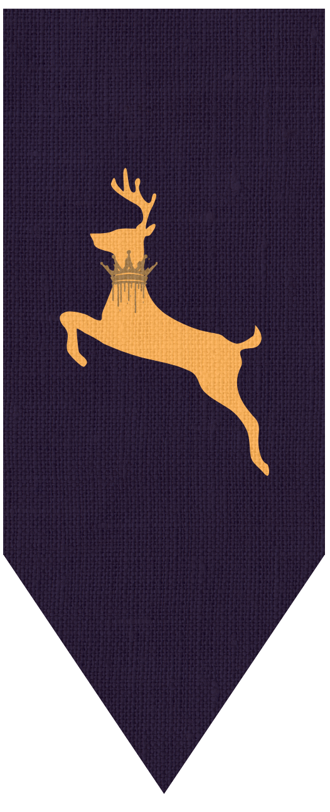

Casas de Walingardyn
Esta página está em construção. Em breve terá conteúdo exclusivo para você!
Os brasões de Walingardyn fogem do padrão heráldico tradicional porque refletem a diversidade cultural, mágica e histórica do próprio mundo. Em vez de seguir os modelos europeus medievais, cada brasão expressa os valores, crenças, mistérios ou poderes únicos da casa a que pertence.
Como Walingardyn é um continente moldado por raças fantásticas, religiões distintas, artefatos mágicos e conflitos sobrenaturais, os símbolos heráldicos evoluíram com base nessas influências, incorporando rúnicas, criaturas místicas, elementos arcanos, flora mágica e ícones sagrados ou proibidos.
Em resumo: a heráldica em Walingardyn não busca imitar o realismo histórico, mas traduzir o espírito e a singularidade de cada linhagem, onde magia e identidade caminham lado a lado.

Casa Effthan
Local: Reino de Agaroff, Triohnte.
Uma das casas mais antigas e influentes do continente Triohnte. Responsável por restaurar o trono após a Guerra do Eclipse. O atual regente, Thymus Effthan, enfrenta conspirações e segredos antigos, herdando o poder e as cicatrizes da linhagem.

Casa Cervindor
Local: Reino de Kwazahdar.
Tradicionalmente diplomática e com domínio sobre rotas comerciais, esta casa possui uma história ambígua envolvendo magia antiga e rivalidades com outros clãs.

Casa Ashen
Local: Reino de Castindell.
Conhecida pela ligação com a feitiçaria e artes ocultas. A linhagem mantém segredos ligados à queda de antigos impérios e é respeitada por sua influência arcana.

Casa Haygth
Local: Reino de Dyllewalt.
Originária das florestas silvestres, esta casa mantém forte aliança com povos nômades e religiosos haragûnicos. Atua nos bastidores influenciando decisões com sabedoria ancestral.

Casa Soulwing
Local: Origem desconhecida.
Enigmática e mística, esta casa tem vínculos com forças além da compreensão humana. Seus membros lidam com artefatos antigos e magias perdidas, com lealdades imprevisíveis.

Casa Bolynas
Local: Ligada à Casa Effthan, porém renegada.
Representa uma vertente oculta da dinastia Effthan, com crenças e ações em rota de colisão com o trono, alimentando lendas sobre o retorno da linhagem corrupta do passado.

Casa Barchyro
Local: Ligada à Casa Effthan, porém renegada.
Representa uma vertente oculta da dinastia Effthan, com crenças e ações em rota de colisão com o trono, alimentando lendas sobre o retorno da linhagem corrupta do passado.
← Voltar para a página inicial
▼
- Português
- Español
- English